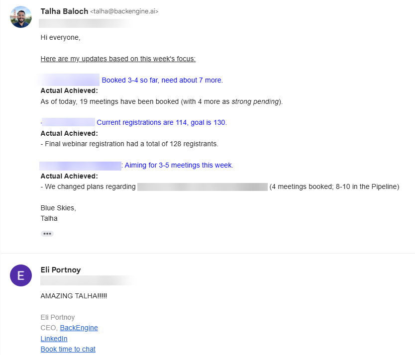
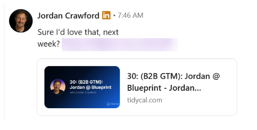
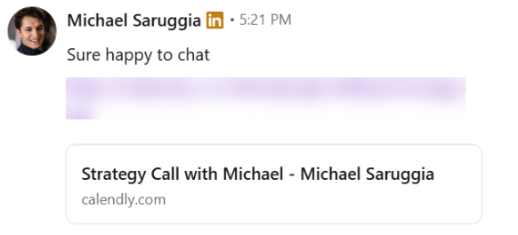
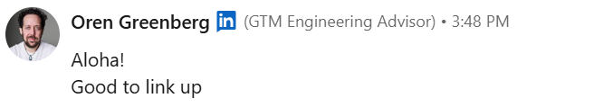
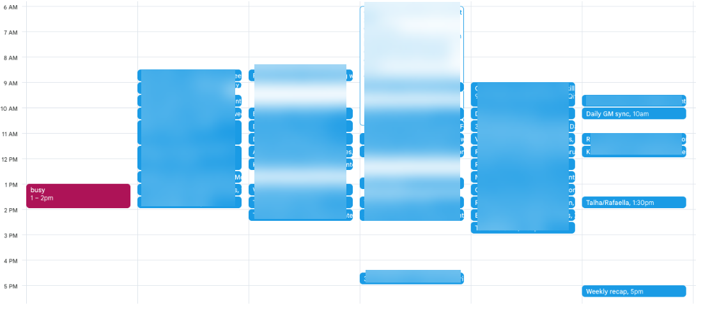
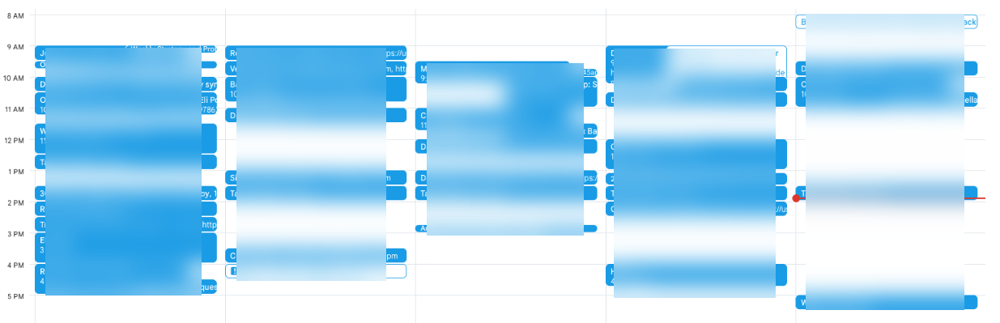
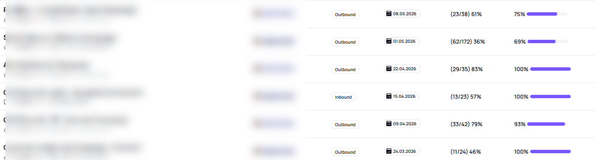
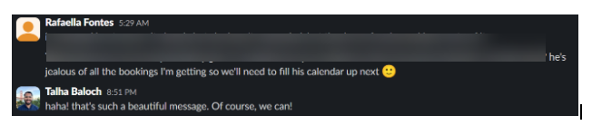

BackEngine hired me as LinkedIn GTM Lead in March 2026. The ICP was set. The strategy was simple: reach out as if a Director was reaching out, mimic Rafa's tone strictly, and build outreach a senior exec couldn't sense was automated. Three months later we'd booked 19 qualified demos in a single week, paused outreach because the calendar was overflowing, and pulled in Jordan Crawford, Oren Greenberg, and Michael Sarrugia.
BackEngine had referral partners giving us intros. Rafaella Fontes (Director of Strategy & Operations) had already laid most of the groundwork. ICP was in place. What was missing: messaging that didn't sound like every other outbound message a Customer Success exec has ever ignored, and a tone that carried the gravity of a Director reaching out -- not a sequence in someone's queue.
“Executives have a great nose for sensing automations. No automations at all -- mimic tone, strictly.”The strategy · BackEngine GTM lead
March (Month 1). 1 meeting booked. The first month was about laying the foundation -- ICP refinement, messaging frameworks, copy that mimicked Rafa's voice without sounding like a script.
April (Month 2). 14 partner meetings booked. Quota was 8. We landed meetings with potential influencers in the CS space who'd been ghosting BackEngine for months.
May (Month 3). 19 qualified demos in the first week alone. Quota for the month was 10 qualified meetings. We hit 200% of quota in 7 days, then had to pause outreach because Rafa's calendar was booked solid for two weeks running.
The outreach went so viral with prospects that we booked stakeholders, ICP buyers, AND influencers in the GTM space -- including Jordan Crawford, Oren Greenberg, and Michael Sarrugia.


Connection acceptance rate hit close to 80% on two separate campaigns. For senior CS leaders at $500M--$1B companies, that's the difference between getting on the call and getting filtered out before the message lands.




With great power comes great responsibility -- Uncle Ben (Spider-Man).
With quota smashed and the calendar overflowing, the next part of this journey is taking over the LinkedIn strategy for Eli Portnoy (2x exit founder, HBS Executive Fellow). Current state of his profile:
I'm turning Eli's profile into an inbound engine. Stay tuned.


If your buyers are CROs, VPs, and Directors at $500M+ companies and your acceptance rate is below 30%, we can rebuild the motion. Audit and consultation are free.
Book a discovery callDisclaimer: this case study describes Talha's role as LinkedIn GTM Lead at BackEngine. Clay Stan and BackEngine are separate entities.